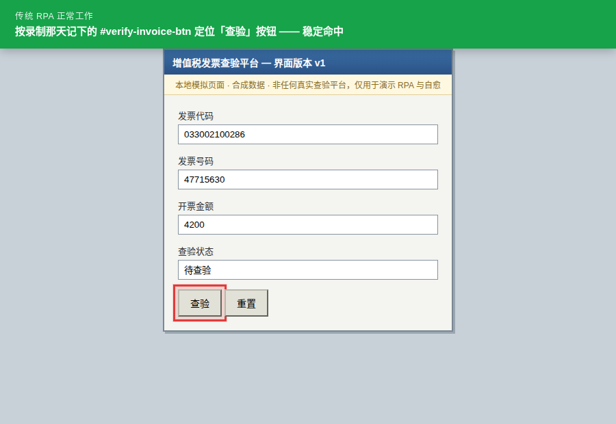

选择器命中，点击成功
传统 RPA 在刚上线时非常稳定。录制那天，查验平台上有一个 id 为
#verify-invoice-btn、文案是「查验」的按钮，机器人把它记了下来，
此后每天照着点，一次都没错过。

这一幕背后
这就是 RPA 值钱的地方，也是它被大规模部署的原因：流程固定、规则固定、选择器固定， 它就能不知疲倦地跑下去，比人快、比人稳、比人便宜。问题不在这一步—— 问题在这一步太好用了，好到没人给它准备后路。